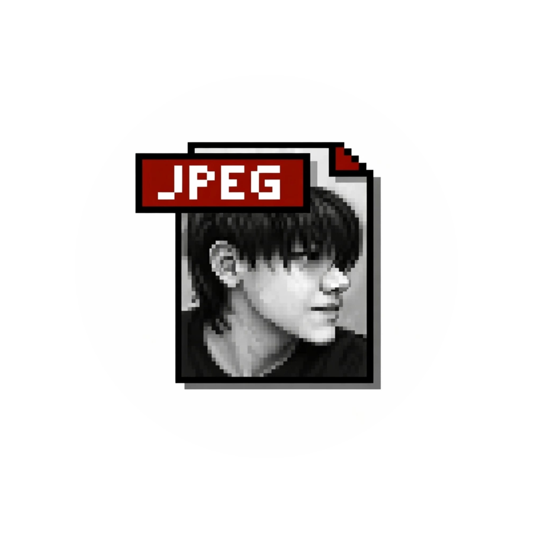
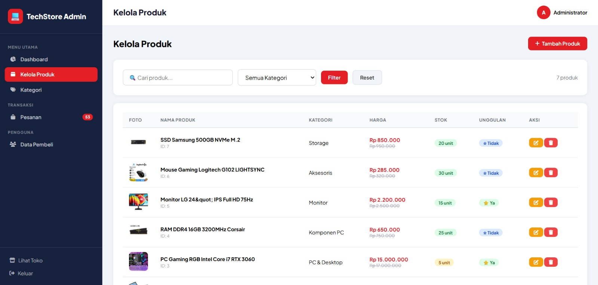

Halo, Saya Iqbaal
Seorang mahasiswa jurusan pendidikan informatika. Saya bersemangat membangun aplikasi web unik yang menggabungkan fungsionalitas modern dengan desain yang menarik.

Seorang mahasiswa jurusan pendidikan informatika. Saya bersemangat membangun aplikasi web unik yang menggabungkan fungsionalitas modern dengan desain yang menarik.

Dashboard admin berfungsi sebagai pusat kontrol sistem. Admin dapat melihat kondisi toko secara cepat tanpa harus membuka setiap menu
Lihat Demo
Tampilan toko pada website adalah bagian yang dilihat langsung oleh pelanggan untuk mencari, memilih, dan membeli produk. Untuk website toko komputer, tampilannya dapat dibuat seperti toko online modern.
Lihat Demo